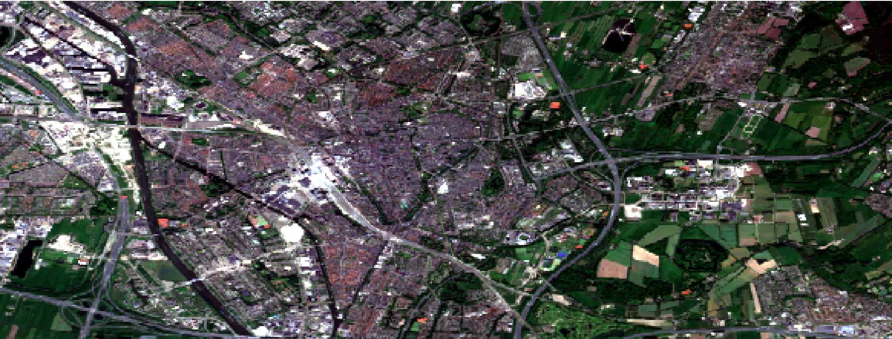

Land Cover
All the maps on this page are from the same area in Utrecht. The map is from Google Earth Engine which was exported onto ArcGIS pro where different analysis were conducted. This map is the original map, also called a true color composite. That is, the bands used represent the colors showed on the map allowing the area to resemble what would be seen by the human eye.
- Red - B4 (red)
- Green - B3 (green)
- Blue - B2 (blue)
False Color Composite
In the map above, we can see a false color composite. That is, the band colors do not represent the true colors. In the false color composite map above the bands are as follow.
- Red - B8 (visible and near infrared)
- Green - B4 (red)
- Blue - B3 (green)
Band 8 is visible and near infrared which shows chlorophyll. This aids in showing plants and their health, the reder an area is, the healthier it is. Band 4 is red which also designates areas with the color green as red. Finally, band 3 is green which shows areas that are blue to contrast with the red from plants. Together, we get the map above which designated green areas and the health of the plants in these areas.
There are 3 main types of classifications that I explored: unsupervised pixel, unsupervised object, and supervised pixel. These 3 types of classifications will be explored below with the use of the same map as above.
Unsupervised Pixel
This classification system is as understood from the name, unsupervised. This means that the program will classify the areas. In this case, based on the pixels. As can be seen on the map above, the program has only detected two classes (pink and green). When we compare this map to the first one, we can see that all areas that are blue, are classified as the same. The biggest spot classified as such is Utrecht Central, the train station.
Unsupervised Object
This classification system, similar to the one above is unsupervised however, instead of looking at pixels to determine classes, it looks at objects. To do this, the program determines areas that are similar. In the case of this map, the unsupervised object classification looks extremly similar to the unsupervised pixel classification.
It seems that when it comes to unsupervised classifications with this map any blue colour is identified as a class. This is the case in both the object and pixel unsupervised classifications. The rest of the map is identified as a seperate class. This is most likely due to the habitation areas (such as the center of Utrecht) having many different colours due to their close proximity.
Supervised Pixel
Supervised pixel classification unlike unsupervised, is done manually. To do this, ArcGIS pro had pre-determined classes which I could edit. In this map, I used three main classes: water, built environments and, greenery. The pink on the map represents the built areas such as housing, buildings and roads, water is depicted as blue and, greenery as green.
Personally, I found the supervised pixel classification the most accurate and therefore, my favorite. For this map specifically, I found the program struggled to differentiate between vegetation and highly built environments. This was a limitation with unsupervised classifications which was not an issue with the supervised classification. However, supervised classification also has its limitations. Because it is not manually, it takes more time and allows for more human errors. In the map above, I selected parts however, I was not as specific as I could have been. I was also able to do this because I know the area. Therefore, unsupervised classifications can be helpful when the aim does not have specific classifications and the area is not too compressed. This means an area that is not like Utrecht with buildings very close together.

NDVI
NDVI stands for Normalised Difference Vegetation Index. It is a range from -1 to +1. +1 most likely represents very dense green areas while, -1 most often represents water. It uses the calculation below to quantify vegetation.
NDVI=(NIR-Red)⁄(NIR+Red)
Near-infrared (NIR) is reflected by chlorophyll which is a higher concentration indicated higher health vegetation. Red on the other hand is reflected when plants are less healthy. With this calculation, we get an understanding of the relationship between NIR and red wavelengths allowing an estimate of plant health. As we can see on the map, the very dark red line is water which as we have seen from the range makes sense. We then see a lot of green with a variety of shades, the darkest being the healthiest plants and the ligher greens being less healthy. From this map, we can get an overall idea of the plant health in Utrecht. An interesting application of this map would be to repeat it in winter and compare plant health.